Rules · Health · Activity
Redesigning the three technical tabs at the bottom of the Apps door, applying the same prosumer treatment as the Profiles redesign (PAP-10978). Every rule reads as one sentence, every app status reads as a plain status word with one suggested action, every audit row is a sentence about what an agent actually did. Approved spec: PAP-11042 (rev 9f195c93).
PRA1Rules index, populated
Five sentence rows, drag-handle reorder, Last 24h hit counts, per-row on/off toggles, "Remembered approvals" section below. One dominant primary action: + New rule.
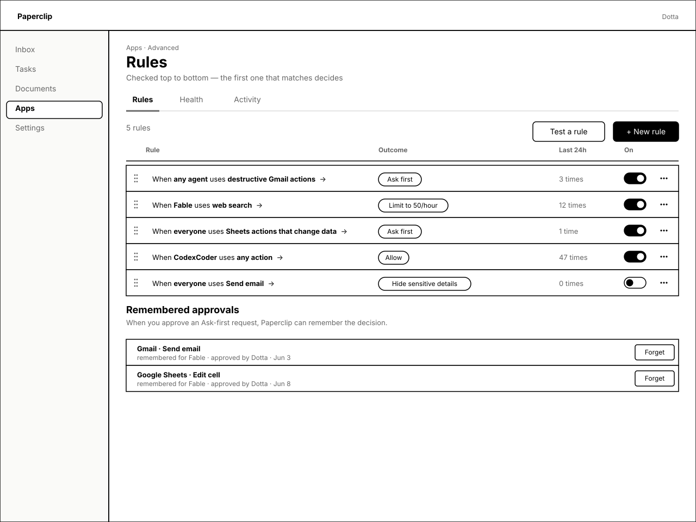
Pixels show
- Sub-title "Checked top to bottom — the first one that matches decides" makes ordering semantics explicit (no integer priority shown).
- Each row is a sentence: When [who] uses [what] → [outcome chip]. Bold for the variable parts; muted "When", "uses", "→" connectors.
- Outcome chips: Ask first · Limit to 50/hour · Allow · Hide sensitive details — same monochrome chip; "Hide sensitive details" stays compact thanks to the fixed Outcome column.
- Drag handle (six-dot) at the left of every row; per-row toggle column; menu (Edit · Duplicate · Turn off · Delete) at the right.
- Last-24h hit counts answer "is this rule actually doing anything?" without opening Activity.
- Remembered approvals section below the rule list, with per-row Forget. Header copy explains the link to Ask-first.
PRA2Rules empty state
Four starter-rule template cards in a 2×2 grid. Each is a one-tap shortcut to a pre-filled builder; the fourth is "Start from scratch".
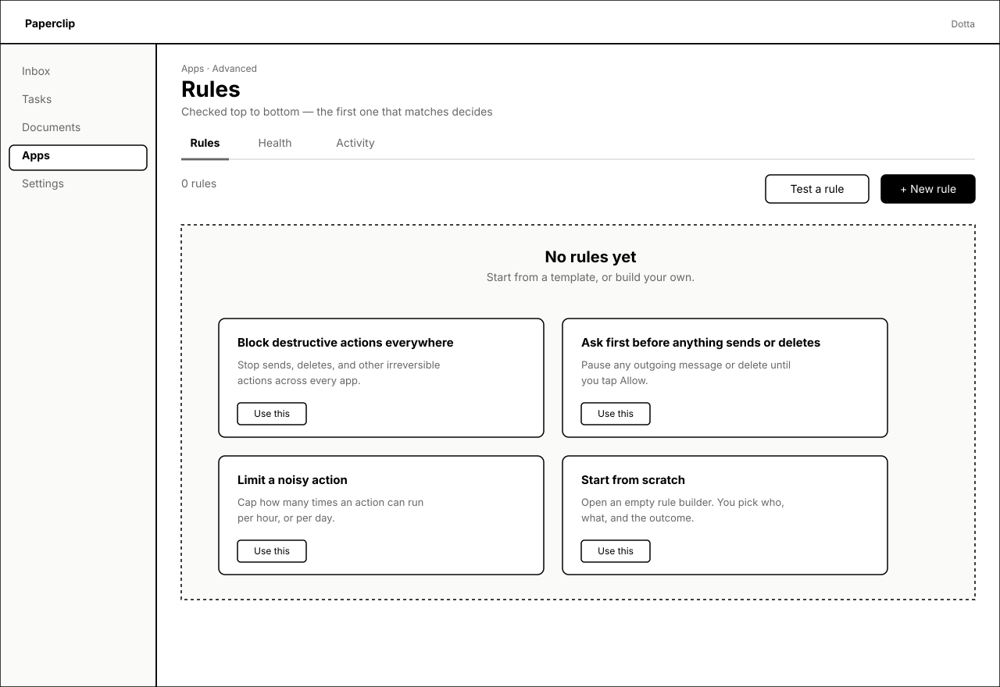
Pixels show
- Dashed empty panel with a friendly "No rules yet" headline.
- Four templates aligned to the four most common safety primitives: block, ask first, limit, start blank.
- Each card: title (15px bold), 2-line description (13px muted), "Use this" button — same compact button used elsewhere so the affordance is recognizable.
- Header still shows the primary + New rule button so a power user doesn't have to go through a template to get to the builder.
PRA3Rule builder — sentence form
Full-page builder replacing the modal selector dialog. Three labeled slots — When / uses / then — with a live preview sentence at the top that updates as you fill in.
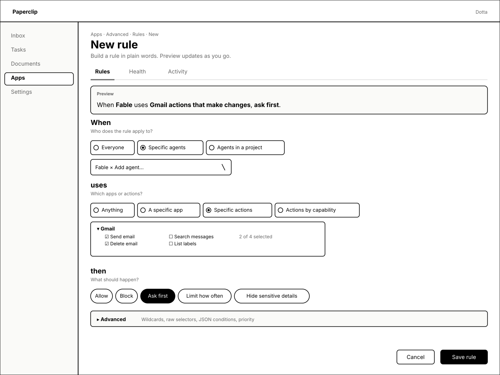
Pixels show
- Preview band at the top: "When Fable uses Gmail actions that make changes, ask first." — exactly the sentence the user will see on the index, rendered before save.
- When — radio row + agent picker. Three choices: Everyone · Specific agents (selected) · Agents in a project. Picker shows tag chips for selected agents.
- uses — radio row + tree picker. Four choices: Anything · Specific app · Specific actions (selected) · Actions by capability. The tree picker reuses the AP4 actions tree pattern so prosumers don't learn a new affordance.
- then — outcome chips: Allow · Block · Ask first (selected, filled) · Limit how often · Hide sensitive details. Tapping a chip swaps inline configs (rate-limit gets N/window inputs; redact gets field-list).
- Advanced collapsed at the bottom, summarised so users know what's there without seeing it.
- Footer: Cancel + Save rule (primary). One dominant action.
PRA4Rule builder — Advanced expanded
Same builder, Advanced collapse open. Power-user fields the prosumer flow hides: wildcard action names, raw selectors, Conditions JSON, custom check config, and an explicit priority integer.
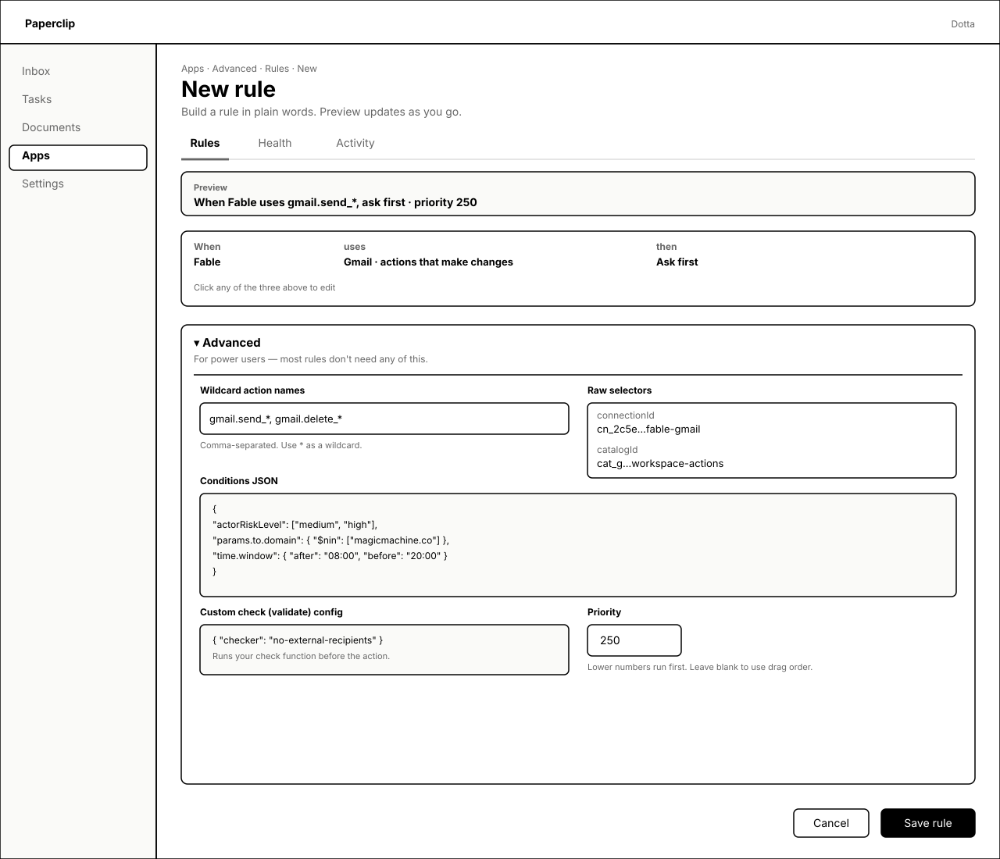
Pixels show
- Preview band updates to reflect the wildcard action and explicit priority: "When Fable uses gmail.send_*, ask first · priority 250".
- When / uses / then row collapses to a one-line summary above Advanced — click any of the three to re-edit.
- Advanced panel header copy: "For power users — most rules don't need any of this." sets expectations.
- Wildcard action names — comma-separated text input with * wildcard hint.
- Raw selectors — labeled key/value pairs (connectionId, catalogId) instead of an enum dropdown so power users can paste IDs.
- Conditions JSON — full-width monospaced editor seeded with an illustrative example so reviewers see what the engine accepts.
- Custom check (validate) config — small JSON box for the `validate` effect type; tooltip-style hint underneath.
- Priority — explicit integer input with the hint "Lower numbers run first. Leave blank to use drag order." resolves the question of how drag-order coexists with explicit priority.
PRA5Forget approval & Delete rule confirms
Two destructive confirms shown side-by-side. The Forget confirm explains what will happen on the next try; the Delete confirm shows the 24h hit count so deleting an active rule is a conscious choice.
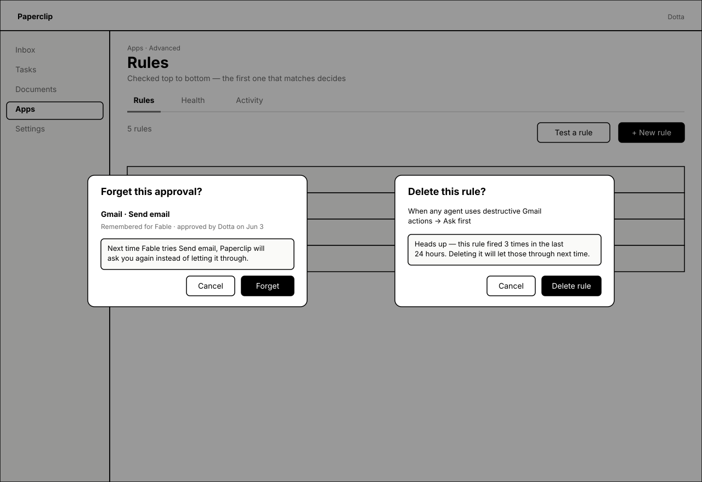
Pixels show
- Both modals dim the underlying Rules list with the same 40% scrim.
- Forget this approval? — names the specific app · action ("Gmail · Send email"), names who it was remembered for ("Fable"), names the original approver ("Dotta"), and explains the consequence in one sentence: "Next time Fable tries Send email, Paperclip will ask you again." Buttons: Cancel + Forget (primary).
- Delete this rule? — shows the rule sentence verbatim, then a callout: "Heads up — this rule fired 3 times in the last 24 hours. Deleting it will let those through next time." Buttons: Cancel + Delete rule (primary).
- Both confirms are sized small (400×240) and avoid full-screen modal weight.
PRA6Test a rule (slide-over)
Right-side slide-over replacing the "decision simulator" surface. Pick an agent + an action; get a plain-words verdict and a link to the deciding rule. Reason codes and matched-policy IDs live in a Details collapse.
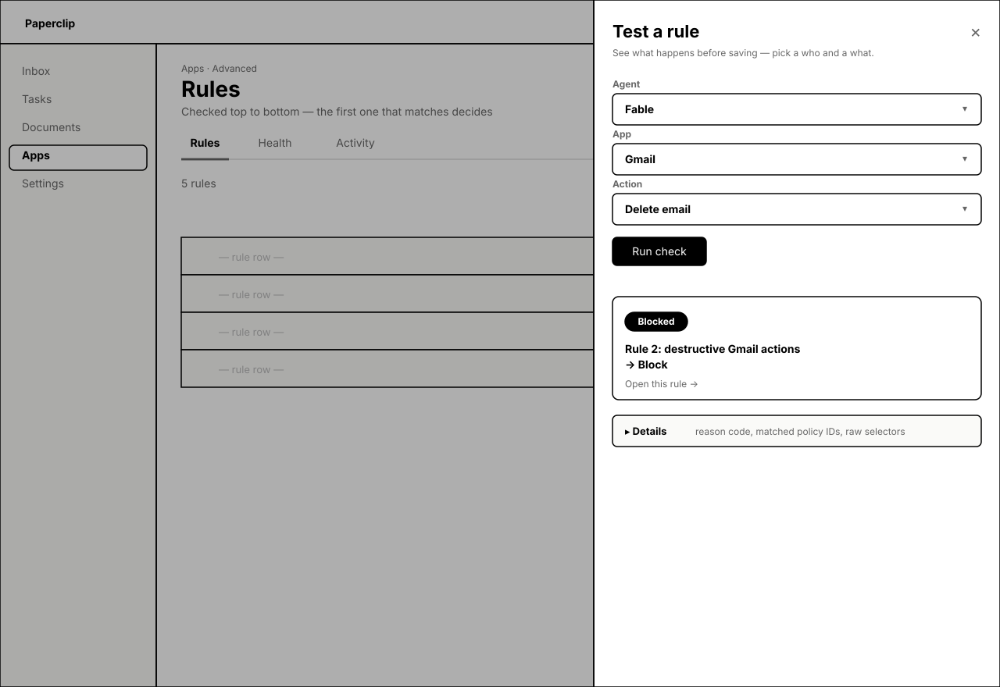
Pixels show
- Right-side slide-over (520px), background page dimmed.
- Three pickers matching the rule builder's vocabulary: Agent · App · Action. Same dropdown affordance.
- Primary action Run check, then a verdict card: filled "Blocked" chip + the deciding rule sentence + "Open this rule →" deep link.
- Verdict copy stays plain: "Rule 2: destructive Gmail actions → Block" — same words the user sees on the index.
- Details collapse at the bottom for reason codes, matched policy IDs, raw selectors — for when SecurityEngineer needs to verify a real decision.
PRA7Health — all good
Plain summary strip (Apps running · Typical response time · Errors last hour), Live pill with 15s refresh, single-row-per-app status table with Working badge and Restart button. No P95/timeout/deferral vocabulary on the primary surface.
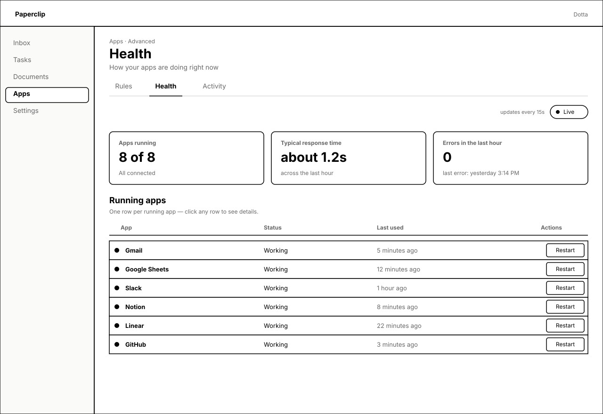
Pixels show
- Summary strip — three big-number cards: "8 of 8" running, "about 1.2s" typical, "0" errors. Each card has a label, the number, and a one-line context note. No ops jargon.
- Live pill (top-right) + "updates every 15s" hint — preserves the existing auto-refresh.
- Status table: filled dot + bold app name + plain "Working" + last-used timestamp + Restart button. Compact ~40px rows.
- App names humanized via the shared display-name helper (no IPs, no `Plugin:` prefixes).
PRA8Health — needs attention
Alert card at the top with one suggested action ("Restart Gmail"); status table shows the bad row marked with a triangle and the same "Needs attention" word. Restart confirm modal centred.
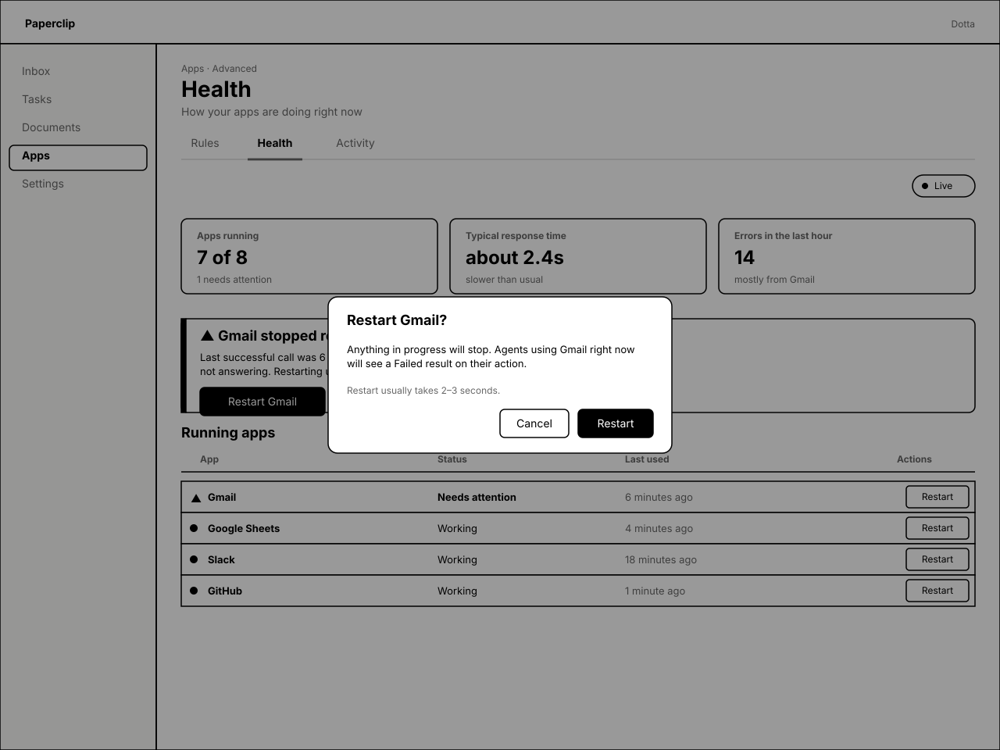
Pixels show
- Summary strip degrades naturally: "7 of 8" running, "about 2.4s" typical (with "slower than usual"), "14" errors with "mostly from Gmail".
- Needs-attention card: black left bar (visual emphasis without colour), triangle marker, plain title ("Gmail stopped responding"), 2-line explanation, single suggested action Restart Gmail as a primary button.
- "▸ Technical details" collapse on the card for runbook paths / severity codes / restart-history — kept out of the primary surface but reachable.
- Status table row for Gmail: triangle marker (replaces dot), bold "Needs attention" status word, last-used "6 minutes ago".
- Restart confirm modal: plain-words consequence ("Anything in progress will stop. Agents using Gmail right now will see a Failed result on their action.") + "Restart usually takes 2–3 seconds." Buttons: Cancel + Restart.
PRA9Health — row expanded
Technical details (slot key, runs-on-this-machine / connects-over-the-internet, pid, scope, trust tier, calls in the last hour, owner) live inside the expander. Stop / Restart actions inside the expander too.
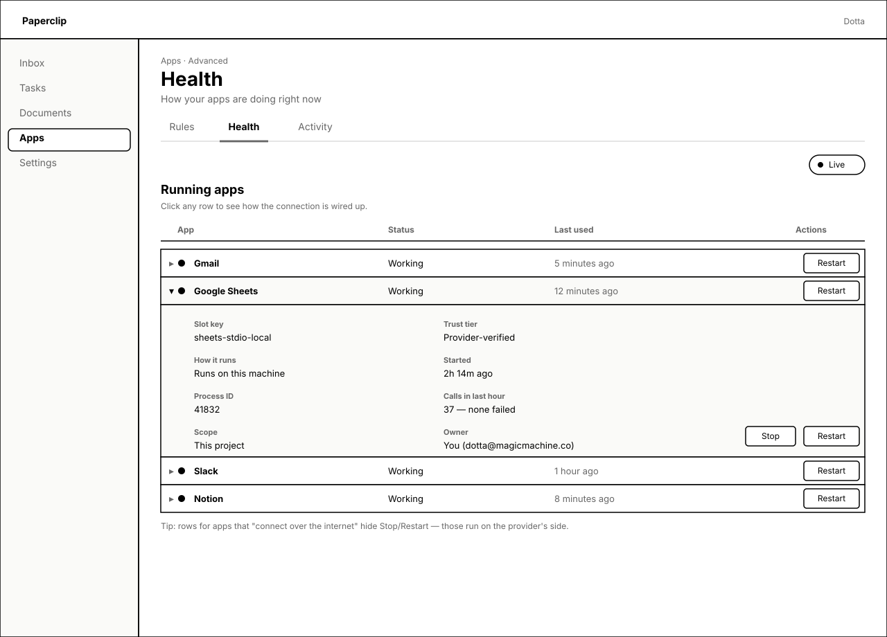
Pixels show
- Expanded row is shaded (fafaf8) with chevron rotated; collapsed rows above and below are unshaded with right-chevron.
- Two-column key/value list inside expander:
- Left: Slot key · How it runs ("Runs on this machine" / "Connects over the internet") · Process ID · Scope.
- Right: Trust tier · Started · Calls in last hour · Owner.
- Stop and Restart mirrored at the bottom-right of the expander; main row's Restart button still works as a shortcut.
- Footer tip: "rows for apps that 'connect over the internet' hide Stop/Restart — those run on the provider's side."
PRA10Activity — populated, filters set
Filter row (search · App · Agent · Outcome · Time window), feed of sentences with outcome chips, Load more pagination, footer note about how Paperclip records activity.
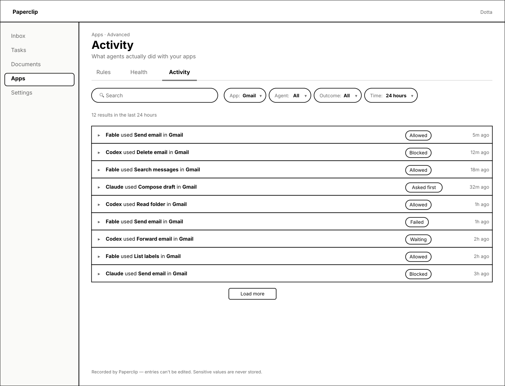
Pixels show
- Search input + 4 dropdown chips (App: Gmail · Agent: All · Outcome: All · Time: 24 hours). Chip labels are split label/value so the filter state reads at a glance.
- "12 results in the last 24 hours" — the time-window chip's value echoed for clarity.
- Feed sentences: "<agent> used <action> in <app>" followed by an outcome chip on the right and a time-ago label on the far right.
- Outcome chips include all five vocabulary states: Allowed · Blocked · Asked first · Failed · Waiting (was "deferred").
- Load more button instead of a limit picker.
- Footer note (12px muted): "Recorded by Paperclip — entries can't be edited. Sensitive values are never stored." Replaces the "server-authoritative" badge.
PRA11Activity — row expanded
Expanded row reveals plain-words "Why" linked to the deciding rule, the task and run that triggered it, and a Details sub-collapse with reason code · actor type · full run UUID · raw action name.
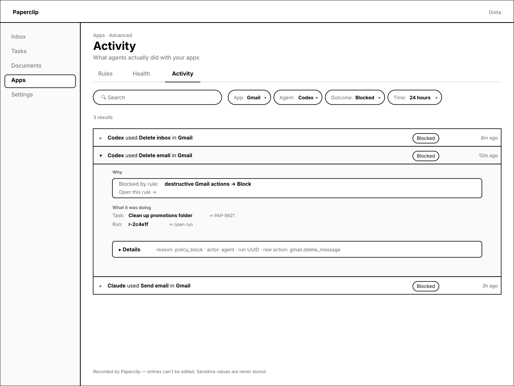
Pixels show
- Filter chips show a narrower view (App: Gmail · Agent: Codex · Outcome: Blocked) — the user got here by clicking a Blocked chip in PRA10.
- Expanded row is shaded (fafaf8); collapsed rows above and below stay unshaded.
- Why block: white card with "Blocked by rule:" + the rule sentence + a "Open this rule →" deep link. Deep-link target is the same /apps/advanced/policies row.
- What it was doing: Task (with PAP-9921 link), Run (with r-2c4e1f → open run). Same task/run links the audit row already has, just presented as a labeled pair.
- Details sub-collapse: reason: policy_block · actor: agent · run UUID · raw action: gmail.delete_message. Power-user info, behind one more click.
PRA12Activity — empty & filtered-empty
Two empty states stacked. Top: "No activity yet" with a primary-action link to Rules. Bottom: "No matches" with the active filters shown and a Clear filters button.
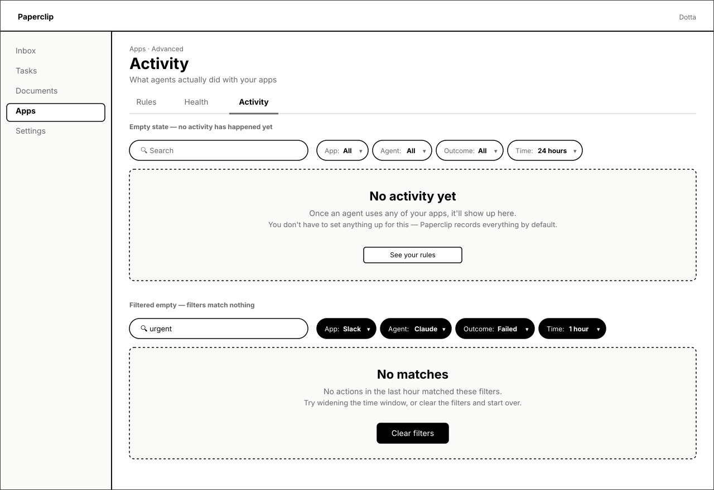
Pixels show
- The small annotation labels ("Empty state — …", "Filtered empty — …") are wireframe annotations, not UI copy. Only the dashed panels and their content render in product.
- No activity yet — friendly title, two lines of context, and a "See your rules" secondary button so the user can step sideways to set up guardrails before any activity happens.
- No matches — filter chips switch to filled/inverted style so the active filter state is obvious; copy names the time window the user picked ("No actions in the last hour matched these filters"). Primary action: Clear filters.
- Both panels share the same dashed-border + light fill so they read as the same family.
·Vocabulary map
Every primary-UI string in the redesign comes from this map. Engine vocabulary stays in Advanced collapses, row expanders, and Details collapses.
- Policy / policy rule→Rule
- require_approval / rate_limit / redact / validate→Ask firstLimit how oftenHide sensitive detailsCustom check (Advanced)
- Priority 0–10000→Drag order — first match wins
- Selectors (actorType, riskLevel, toolName…)→When / uses sentence slots
- Trust rule (auto-promoted)→Remembered approval
- Decision simulator / reason code / matched policy IDs→Test a rule
- Runtime slot / local_stdio / remote_http→Runs on this machineConnects over the internet
- P95 latency / timeout rate / capacity deferrals→Typical response timeErrors in the last hour
- Supervisor recommendation / runbook→Needs-attention cardone suggested action
- Audit event / call_allowed→Activity sentenceoutcome chip
- Deferred→Waiting
?For reviewer
Things I'd like Dotta's eyes on before this becomes implementation issues.
- Drag-order vs. explicit priority. Spec says drag writes priorities server-side; PRA4 also exposes an explicit Priority integer in Advanced. Should setting Priority disable drag for that rule, or just be a tiebreaker? My current copy says "Leave blank to use drag order." Acceptable?
- "Hide sensitive details" outcome. Rendered as a chip on the index, but in the builder it implies a field-list selector. Frame PRA3 leaves this as a chip-only choice (no inline configurator shown). OK to keep field-list inside the chosen-outcome's inline config (revealed when the chip is selected) and not pre-mock it?
- Health summary strip on degraded state. PRA8 keeps the same three cards but recasts their meta line ("slower than usual" / "mostly from Gmail"). Should the strip itself change shape when something's wrong (e.g. swap to a single big alert card), or stay symmetric like this?
- Activity time-window default. Currently 24 hours. Considering switching to 7 days to match how teams retrospectively audit. Strong preference?
- "Remembered approvals" placement. Currently a second section on the Rules index. Could also live on its own under "Settings" or per-app on the connection detail. Wireframe defaults to bundling it with Rules because that's where the same-shape data already lives. Keep, or split?